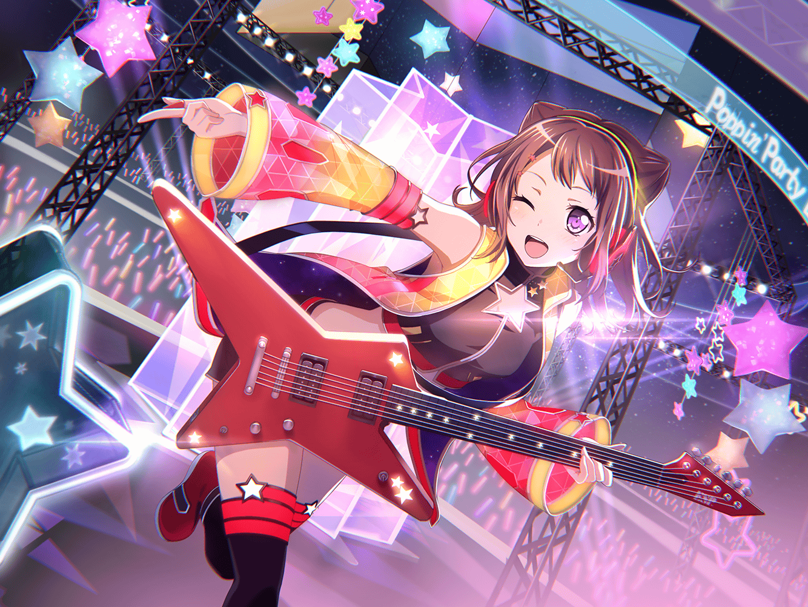

香澄
コンコン～♪
香澄
{{userName}}さーん、いますかー？
香澄
あっ、いたいたぁ～！
香澄
入っていい？ いい？
香澄
う～！ お邪魔しまっす！
香澄
えへへ。おはようございまーす♪
香澄
ふふっ、有咲が教えてくれたんだよー。
芸能人とかは、朝でも夜でもおはようございますって
挨拶するって！
香澄
どう？ 芸能人っぽかった？
……だめか～！
香澄
有咲が言ってたときは
ちょっと芸能人っぽかったんだけどなぁ……
あ、ここ座っていい？ えへへ、ありがと！
香澄
ふう～。よっこいしょー！
香澄
あっ！ よっこいしょーって言っちゃった！
つい言っちゃう時あるんだよ～
香澄
え？ あなたも言うときある？
そっかー！ よかった！
香澄
あっ、でも有咲はよく言ってるかも！
よっこいしょーあーつかれたぁ！ って
香澄
ん？ あ、なんで疲れてたか？
へへへ～それはねー……
香澄
ほら……これっ！
香澄
ジャジャンッ！！
香澄
なーんでしょ？
香澄
星のキャンディー？
……おしいっ！
香澄
せーかいはー、
ポピパキャンディーでしたー！！
香澄
どう？ 上手に出来てるでしょ？
香澄
というわけで、はい♪
香澄
あなたに、おすそわけー♪
香澄
ほらほら、食べて食べて！
香澄
……美味しい？ かなー？
香澄
美味しい？ ほんとに？
香澄
よかったー！
香澄
そのキャンディ、みんなと一緒に作ったんだよ
香澄
仲がいい人たちにだけ配ることにしたんだー
香澄
その中であなたは大当たりかも！
香澄
あなたが今食べたのは、私が作ったやつだからー！
食べると、ハッピーになれるんだよー！ えへへ！ ちょっと
形くずれちゃったけど、食べちゃったからわかんないよねっ
香澄
りみりんが作ったのはね、すっごく小っちゃいの！
でもでも、とってもかわいくできてたよ♪
香澄
沙綾は、形作るのすっごく上手だった！
パン作り手伝ってるからかな？
香澄
おたえは、私と一緒にむずかしいねーって言ってた。
思った通りの形にできない～って！
香澄
有咲のはー……
あ、だれにも言うなっていわれてた！ ないしょ！
香澄
みんなで一緒にポピパキャンディー作って、
ほんとに楽しかったなー
香澄
あ、そうだっ！
香澄
ポピパキャンディーって、
なんで作り始めたか知ってる？
香澄
って、知らないよねー
香澄
ふふ～♪
教えてあげよーか？
香澄
実はね、商店街のお祭りがきっかけなんだー
香澄
飴細工屋さんが作るキャンディーが人気でね、
星型のキャンディーを作ってもらう話になったの！
香澄
でも、予算の問題で、
お祭りが中止になるって聞いて
香澄
どうしても諦めきれなくてね、みんなでいろいろ考えたんだよ
香澄
商店街のお祭りを復活させよーって！
香澄
その結果が、それ！
かわいくておいしーポピパキャンディー♪
香澄
大変だったけど、みんなと一緒に頑張ることができたし、
ポピパキャンディーも作ることができたし！
香澄
今は大満足だよっ！
香澄
これからも、
みんなでいろんなことがしたいなー
香澄
それでね、いっぱいいっぱい思い出を増やすの！
香澄
今はまだ少ないけど、
どんどん増えていくんだろうな～♪
香澄
考えるだけでも楽しくなってきたよ！
香澄
キラキラやドキドキを、たくさんたくさん集めないとね！